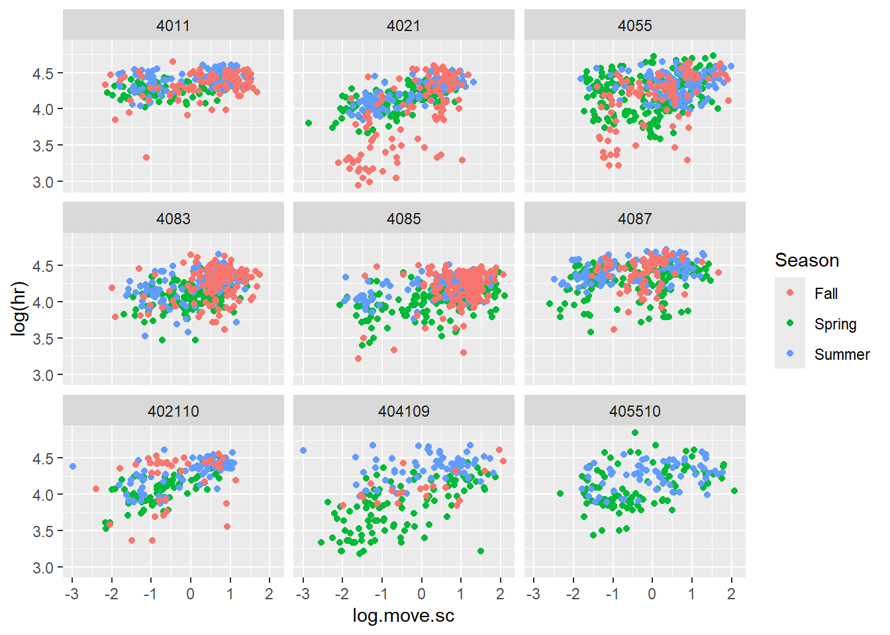
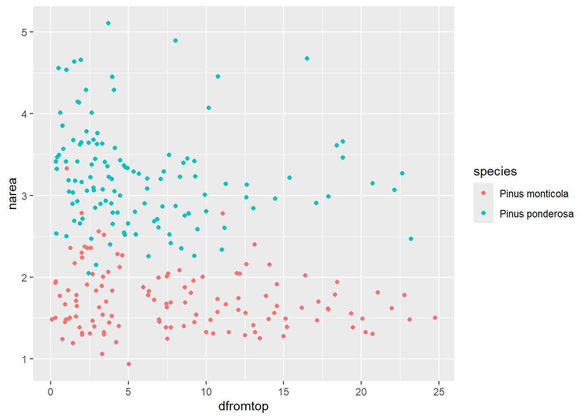

This dataset includes GPS and heart rate data from black bears tracked across multiple years. Each record represents one “bear-year” (a unique individual in a specific year). You’ll explore how movement and season influence heart rate while accounting for repeated observations within bear-year.
library(tidyverse)
Warning: package 'tidyverse' was built under R version 4.4.2
── Attaching core tidyverse packages ──────────────────────── tidyverse 2.0.0 ──
✔ dplyr 1.1.4 ✔ readr 2.1.5
✔ forcats 1.0.0 ✔ stringr 1.5.1
✔ ggplot2 4.0.0 ✔ tibble 3.2.1
✔ lubridate 1.9.3 ✔ tidyr 1.3.1
✔ purrr 1.0.2
── Conflicts ────────────────────────────────────────── tidyverse_conflicts() ──
✖ dplyr::filter() masks stats::filter()
✖ dplyr::lag() masks stats::lag()
ℹ Use the conflicted package (<http://conflicted.r-lib.org/>) to force all conflicts to become errors
library(nlme)
Attaching package: 'nlme'
The following object is masked from 'package:dplyr':
collapse
library(emmeans)
Warning: package 'emmeans' was built under R version 4.4.3
Welcome to emmeans.
Caution: You lose important information if you filter this package's results.
See '? untidy'
library(visreg)
Warning: package 'visreg' was built under R version 4.4.3
library(sjPlot)
Warning: package 'sjPlot' was built under R version 4.4.3
Attaching package: 'sjPlot'
The following object is masked from 'package:ggplot2':
set_theme
library(ggeffects)
Warning: package 'ggeffects' was built under R version 4.4.3
Read in the datasetbearmove.csv. Create a centered and scaled version of log.move called log.move.sc.
data <-read.csv("bearmove.csv")# Standardized trophic position, with the function scaledata$log.move.sc <-scale(data$log.move)str(data)
Visualize the relationship between log.move.sc and log(hr), colored by Season and faceted by BearIDYear.
ggplot(data, aes(x = log.move.sc, y =log(hr), color = Season)) +geom_point()+facet_wrap(~ BearIDYear)

Fit a linear model using lm() that ignores repeated measures. Include log.move.sc, Season, and their interaction as fixed effects.
> Interpret the coefficients.
the model is significant based on the p value
lm <-lm(hr ~ log.move.sc*Season, data = data)summary(lm)
Call:
lm(formula = hr ~ log.move.sc * Season, data = data)
Residuals:
Min 1Q Median 3Q Max
-48.045 -10.208 -0.346 10.083 65.707
Coefficients:
Estimate Std. Error t value Pr(>|t|)
(Intercept) 67.3514 0.5900 114.160 < 2e-16 ***
log.move.sc 7.2169 0.6127 11.779 < 2e-16 ***
SeasonSpring -3.1612 0.7410 -4.266 2.05e-05 ***
SeasonSummer 7.8694 0.7703 10.216 < 2e-16 ***
log.move.sc:SeasonSpring -2.8528 0.7497 -3.805 0.000145 ***
log.move.sc:SeasonSummer -2.8239 0.7949 -3.553 0.000388 ***
---
Signif. codes: 0 '***' 0.001 '**' 0.01 '*' 0.05 '.' 0.1 ' ' 1
Residual standard error: 14.93 on 2762 degrees of freedom
Multiple R-squared: 0.1942, Adjusted R-squared: 0.1927
F-statistic: 133.1 on 5 and 2762 DF, p-value: < 2.2e-16
Fit a random intercept model using lmer() with BearIDYear as a random intercept.
> What does this model account for? Does it improve model fit compared to the linear model?
The model accounts for the variance cause by bearIDYear. The intercept barely increased but the slope did improve.
m.gls <-gls(hr ~ log.move.sc*Season, data = data)summary(m.gls)
Generalized least squares fit by REML
Model: hr ~ log.move.sc * Season
Data: data
AIC BIC logLik
22827.42 22868.88 -11406.71
Coefficients:
Value Std.Error t-value p-value
(Intercept) 67.35144 0.5899730 114.16020 0e+00
log.move.sc 7.21689 0.6126876 11.77906 0e+00
SeasonSpring -3.16119 0.7409539 -4.26637 0e+00
SeasonSummer 7.86942 0.7702939 10.21613 0e+00
log.move.sc:SeasonSpring -2.85277 0.7496521 -3.80545 1e-04
log.move.sc:SeasonSummer -2.82390 0.7949006 -3.55252 4e-04
Correlation:
(Intr) lg.mv. SsnSpr SsnSmm lg.mv.sc:SsnSp
log.move.sc -0.272
SeasonSpring -0.796 0.217
SeasonSummer -0.766 0.209 0.610
log.move.sc:SeasonSpring 0.223 -0.817 -0.104 -0.170
log.move.sc:SeasonSummer 0.210 -0.771 -0.167 -0.194 0.630
Standardized residuals:
Min Q1 Med Q3 Max
-3.21733771 -0.68356149 -0.02319203 0.67519881 4.40009595
Residual standard error: 14.93301
Degrees of freedom: 2768 total; 2762 residual
M1.lme=lme(hr ~ log.move.sc, random=~1|BearIDYear, data = data, method="REML")summary(M1.lme)
Linear mixed-effects model fit by REML
Data: data
AIC BIC logLik
22533.16 22556.86 -11262.58
Random effects:
Formula: ~1 | BearIDYear
(Intercept) Residual
StdDev: 7.124844 14.06607
Fixed effects: hr ~ log.move.sc
Value Std.Error DF t-value p-value
(Intercept) 68.93039 2.3918759 2758 28.81855 0
log.move.sc 6.85578 0.2834371 2758 24.18803 0
Correlation:
(Intr)
log.move.sc 0.008
Standardized Within-Group Residuals:
Min Q1 Med Q3 Max
-3.48033627 -0.62565600 0.02522518 0.66309408 4.52131800
Number of Observations: 2768
Number of Groups: 9
Fit a random coefficients model that includes random slopes and intercepts for log.move.sc * Season by BearIDYear.
> Does this model improve fit? Is it overparameterized or singular?
The parameter did increase but I cant decide if it overparameterized.
M2.lme=lme(hr ~ log.move.sc*Season, random=~1|BearIDYear, data = data, method="REML")summary(M2.lme)
Linear mixed-effects model fit by REML
Data: data
AIC BIC logLik
22218.04 22265.43 -11101.02
Random effects:
Formula: ~1 | BearIDYear
(Intercept) Residual
StdDev: 6.984903 13.28418
Fixed effects: hr ~ log.move.sc * Season
Value Std.Error DF t-value p-value
(Intercept) 67.10995 2.3922528 2754 28.053032 0e+00
log.move.sc 9.20881 0.5647230 2754 16.306772 0e+00
SeasonSpring -2.63859 0.6727539 2754 -3.922078 1e-04
SeasonSummer 7.86195 0.6922287 2754 11.357450 0e+00
log.move.sc:SeasonSpring -3.80110 0.6720341 2754 -5.656107 0e+00
log.move.sc:SeasonSummer -3.63640 0.7178697 2754 -5.065538 0e+00
Correlation:
(Intr) lg.mv. SsnSpr SsnSmm lg.mv.sc:SsnSp
log.move.sc -0.056
SeasonSpring -0.182 0.216
SeasonSummer -0.176 0.197 0.615
log.move.sc:SeasonSpring 0.050 -0.808 -0.105 -0.171
log.move.sc:SeasonSummer 0.045 -0.771 -0.165 -0.189 0.632
Standardized Within-Group Residuals:
Min Q1 Med Q3 Max
-3.76073966 -0.63603875 0.02281131 0.61326997 5.06831111
Number of Observations: 2768
Number of Groups: 9
Compare the random intercept and random slope models using a likelihood ratio test or AIC.
> Which model performs better and why?
the model with the fitted random coefficients performed better based on the lower AIC score
anova(m.gls, M1.lme, M2.lme)
Warning in nlme::anova.lme(object = m.gls, M1.lme, M2.lme): fitted objects with
different fixed effects. REML comparisons are not meaningful.
Model df AIC BIC logLik Test L.Ratio p-value
m.gls 1 7 22827.42 22868.88 -11406.71
M1.lme 2 4 22533.16 22556.86 -11262.58 1 vs 2 288.2542 <.0001
M2.lme 3 8 22218.04 22265.42 -11101.02 2 vs 3 323.1279 <.0001
Propose a simpler alternative to the maximal random slopes model.
> What structure might better account for the data without overfitting?
I currently don’t understand what over fitting means here so I cant explain.
Exercise 2: Canopy Nitrogen Allocation
This dataset includes leaf nitrogen concentration (narea) and vertical canopy position (dfromtop) for leaves on 35 trees of two species.
Read in the datasetprefdata.csv.
data_2 <-read.csv("prefdata.csv")
Visualize the relationship between narea and dfromtop, colored by species.
ggplot(data_2, aes(y = narea, x = dfromtop, color = species)) +geom_point()

Fit a mixed-effects model with:
Fixed effects: species, dfromtop, and their interaction
Random intercept: ID (individual tree)
lm_2 <-lme(narea ~ dfromtop * species, random =~1|ID, data = data_2, method ="REML")summary(lm_2)
Linear mixed-effects model fit by REML
Data: data_2
AIC BIC logLik
343.3873 364.3948 -165.6936
Random effects:
Formula: ~1 | ID
(Intercept) Residual
StdDev: 0.3699796 0.3958263
Fixed effects: narea ~ dfromtop * species
Value Std.Error DF t-value p-value
(Intercept) 1.9889400 0.11027192 212 18.036686 0.0000
dfromtop -0.0320319 0.00649733 212 -4.930004 0.0000
speciesPinus ponderosa 1.5662686 0.15437126 33 10.146115 0.0000
dfromtop:speciesPinus ponderosa -0.0222964 0.01093062 212 -2.039812 0.0426
Correlation:
(Intr) dfrmtp spcsPp
dfromtop -0.482
speciesPinus ponderosa -0.714 0.344
dfromtop:speciesPinus ponderosa 0.287 -0.594 -0.478
Standardized Within-Group Residuals:
Min Q1 Med Q3 Max
-2.9925568 -0.4962909 -0.1243879 0.4078130 2.9791541
Number of Observations: 249
Number of Groups: 35
Fit a model with a random slope for dfromtop by ID.
> Does this improve model fit?
No, the AIC is higher for the model without interaction
lm_3 <-lme(narea ~ dfromtop, random =~0+dfromtop|ID, data = data_2, method ="REML")summary(lm_3)
Linear mixed-effects model fit by REML
Data: data_2
AIC BIC logLik
584.2597 598.2973 -288.1299
Random effects:
Formula: ~0 + dfromtop | ID
dfromtop Residual
StdDev: 0.1236545 0.6296662
Fixed effects: narea ~ dfromtop
Value Std.Error DF t-value p-value
(Intercept) 2.7783262 0.07654514 213 36.29657 0.0000
dfromtop -0.0496387 0.02508045 213 -1.97918 0.0491
Correlation:
(Intr)
dfromtop -0.44
Standardized Within-Group Residuals:
Min Q1 Med Q3 Max
-2.01156640 -0.55265511 -0.04237659 0.42811789 3.55080383
Number of Observations: 249
Number of Groups: 35
Assess the significance of the interaction between species and dfromtop.
> Use either car::Anova() or compare a model with and without the interaction.
anova(lm_2, lm_3)
Warning in anova.lme(lm_2, lm_3): fitted objects with different fixed effects.
REML comparisons are not meaningful.
Model df AIC BIC logLik Test L.Ratio p-value
lm_2 1 6 343.3873 364.3948 -165.6936
lm_3 2 4 584.2597 598.2973 -288.1299 1 vs 2 244.8725 <.0001
Interpret the fixed effect coefficients from the summary output.
> What do they tell you about nitrogen allocation across species and canopy height?
since the correlation is -0.44, I assume that as the nitrogen allocation increases, the canopy height decreases among the species. Which I do not believe but its from the analysis I sort of go with it. But I am still struggling to understand the concept so I cant interpret anything yet.
Use emmeans::emtrends() to extract and compare slopes of dfromtop by species.
> Are they significantly different?
yes, the p value is significant
tab_model(lm_2)
narea
Predictors
Estimates
CI
p
(Intercept)
1.99
1.77 – 2.21
<0.001
dfromtop
-0.03
-0.04 – -0.02
<0.001
species [Pinus ponderosa]
1.57
1.25 – 1.88
<0.001
dfromtop × species [Pinus ponderosa]
-0.02
-0.04 – -0.00
0.043
Random Effects
σ2
0.16
τ00ID
0.14
ICC
0.47
N ID
35
Observations
249
Marginal R2 / Conditional R2
0.682 / 0.830
# Get estimated marginal means (EMMs)emmeans_lm <-emmeans(lm_2, ~ dfromtop)
NOTE: Results may be misleading due to involvement in interactions
# Show means, standard errors, and 95% confidence intervalssummary(emmeans_lm, infer =c(TRUE, TRUE))
dfromtop emmean SE df lower.CL upper.CL t.ratio p.value
7.11 2.46 0.0678 33 2.33 2.6 36.334 <.0001
Results are averaged over the levels of: species
Degrees-of-freedom method: containment
Confidence level used: 0.95
Visualize the final model predictions using one of the following:
# Extract the prediction data framepred.mm <-ggpredict(lm_2, terms =c("dfromtop", "species")) # this gives overall predictions for the model
Some of the focal terms are of type `character`. This may lead to
unexpected results. It is recommended to convert these variables to
factors before fitting the model.
The following variables are of type character: `species`